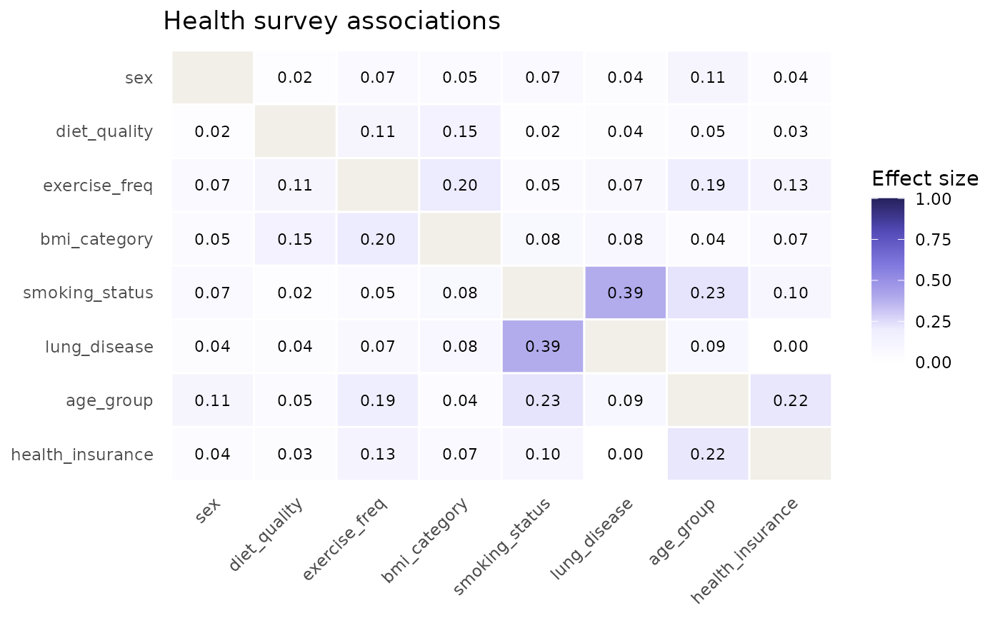

Synthetic health survey data (categorical variables)
Source:R/survey_health-data.R
survey_health.RdA synthetic but realistically structured data frame of 600 respondents
with eight categorical health and demographic variables. The data are
generated with known, calibrated association strengths so that
catgraph produces an informative graph: strong associations
(smoking ~ lung disease), moderate ones (age group ~ exercise frequency,
exercise ~ BMI, BMI ~ diet quality, age group ~ health insurance), and
near-zero ones (sex ~ diet quality). Approximately 5% of values are
missing completely at random (MCAR).
Format
A data frame with 600 rows and 8 columns:
- sex
Factor with levels
female,male.- age_group
Factor with levels
18-34,35-54,55+.- smoking_status
Factor with levels
never,former,current.- lung_disease
Factor with levels
no,yes.- exercise_freq
Factor with levels
low,moderate,high.- bmi_category
Factor with levels
underweight,normal,overweight,obese.- diet_quality
Factor with levels
poor,fair,good.- health_insurance
Factor with levels
no,yes.
Details
The data are entirely synthetic. No real individuals are represented. The association structure was designed to serve as a pedagogical example for catgraph: users can verify that the graph recovers the known strong, moderate, and weak associations.
Missingness was introduced completely at random (MCAR), independently per column, at a 5% rate. Pairwise deletion (as implemented throughout catgraph) is therefore unbiased for this dataset.
Examples
data(survey_health)
str(survey_health)
#> 'data.frame': 600 obs. of 8 variables:
#> $ sex : Factor w/ 2 levels "female","male": 2 1 2 2 1 2 1 1 2 1 ...
#> $ age_group : Factor w/ 3 levels "18-34","35-54",..: 3 3 2 1 2 1 3 2 3 3 ...
#> $ smoking_status : Factor w/ 3 levels "never","former",..: 2 2 3 3 2 3 1 2 1 3 ...
#> $ lung_disease : Factor w/ 2 levels "no","yes": NA 2 1 1 1 1 1 1 1 1 ...
#> $ exercise_freq : Factor w/ 3 levels "low","moderate",..: 1 2 2 1 2 2 1 1 2 2 ...
#> $ bmi_category : Factor w/ 4 levels "underweight",..: NA 2 3 3 2 3 4 4 3 2 ...
#> $ diet_quality : Factor w/ 3 levels "poor","fair",..: 2 2 NA 1 3 3 3 3 1 1 ...
#> $ health_insurance: Factor w/ 2 levels "no","yes": 2 1 2 2 1 1 2 2 2 2 ...
cg <- catgraph(survey_health)
#> Warning: At least one expected cell frequency is < 5 for pair (age_group, bmi_category). Consider setting simulate_p = TRUE.
#> Warning: Sparse contingency table for pair (age_group, bmi_category): 3x4 = 12 cells, 540 obs, 25% cells with E < 5. Cramer's V and chi-square p-values may be unstable; consider collapsing categories, enabling bias correction, or simulate_p = TRUE.
#> Warning: At least one expected cell frequency is < 5 for pair (smoking_status, bmi_category). Consider setting simulate_p = TRUE.
#> Warning: At least one expected cell frequency is < 5 for pair (lung_disease, bmi_category). Consider setting simulate_p = TRUE.
#> Warning: At least one expected cell frequency is < 5 for pair (exercise_freq, bmi_category). Consider setting simulate_p = TRUE.
#> Warning: Sparse contingency table for pair (exercise_freq, bmi_category): 3x4 = 12 cells, 540 obs, 25% cells with E < 5. Cramer's V and chi-square p-values may be unstable; consider collapsing categories, enabling bias correction, or simulate_p = TRUE.
#> Warning: At least one expected cell frequency is < 5 for pair (bmi_category, diet_quality). Consider setting simulate_p = TRUE.
#> Warning: Sparse contingency table for pair (bmi_category, diet_quality): 4x3 = 12 cells, 541 obs, 25% cells with E < 5. Cramer's V and chi-square p-values may be unstable; consider collapsing categories, enabling bias correction, or simulate_p = TRUE.
#> Warning: At least one expected cell frequency is < 5 for pair (bmi_category, health_insurance). Consider setting simulate_p = TRUE.
summary(cg)
#> catgraph summary
#> Variables : 8
#> Pairs evaluated : 28
#> Edges retained : 28
#>
#> Method : Cramer's V (classical)
#>
#> Top 10 edges by effect size:
#>
#> var1 var2 effect_size metric p_value n type
#> 1 smoking_status lung_disease 0.39016 cramers_v 1.309e-18 541 RxC
#> 2 age_group smoking_status 0.22637 cramers_v 2.494e-11 542 RxC
#> 3 age_group health_insurance 0.21755 cramers_v 2.822e-06 540 RxC
#> 4 exercise_freq bmi_category 0.20445 cramers_v 4.382e-08 540 RxC
#> 5 age_group exercise_freq 0.19053 cramers_v 5.895e-08 542 RxC
#> 6 bmi_category diet_quality 0.14572 cramers_v 8.052e-04 541 RxC
#> 7 exercise_freq health_insurance 0.12974 cramers_v 1.045e-02 542 RxC
#> 8 sex age_group 0.10719 cramers_v 4.495e-02 540 RxC
#> 9 exercise_freq diet_quality 0.10585 cramers_v 1.614e-02 543 RxC
#> 10 smoking_status health_insurance 0.09856 cramers_v 7.225e-02 541 RxC
plot_heatmap(cg, title = "Health survey associations")
